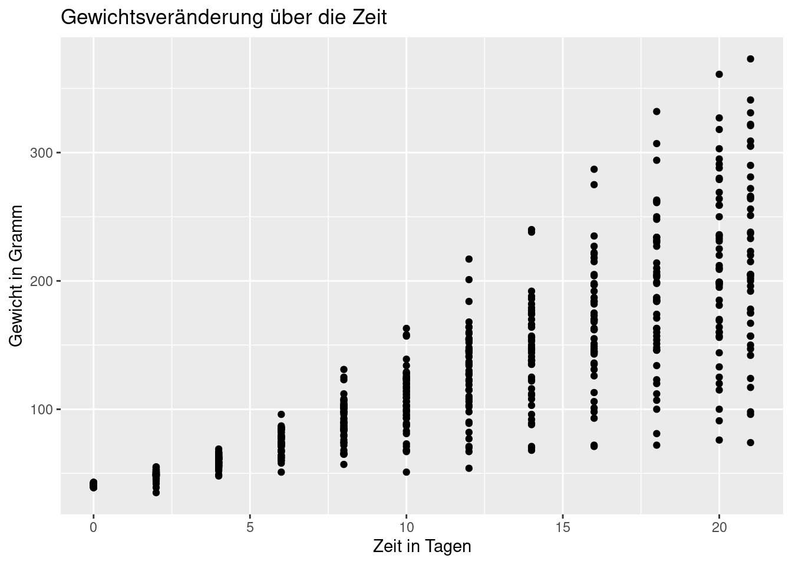

Chapter 13 7. Weiterführende Hilfen
13.1 Eine einfache ggplot-Funktion: qplot()
Es gibt im Paket ggplot2 auch eine einfacher handzuhabende Variante zu ggplot() - das ist qplot() (“quick plot”). Diese ist an den Aufbau der base graphics Funktion plot() angelehnt. Mit ihr können wir verschiedenen Grafiken erstellen, aber sie ist weniger flexibel und modifizierbar als ggplot().
Wir erstellen exemplarisch ein Streudiagramm vom Gewicht der Küken (weight) in Abhängigkeit der Zeit (Time) und ergänzen eine Überschrift sowie Achsenbeschriftungen.
qplot(x=Time, y=weight, data=ChickWeight, geom="point",
main="Gewichtsveränderung über die Zeit",
xlab="Zeit in Tagen",
ylab="Gewicht in Gramm")## Warning: `qplot()` was deprecated in ggplot2 3.4.0.
Für mehr Informationen zu qplot() (vor allem zu den möglichen Argumenten) können wir hier nachschauen.
13.2 Mehrere Plots zusammenführen
Wenn wir mehrere Grafiken haben, die wir in einer gemeinsamen Datei speichern wollen, dann müssen wir dafür auf zusätzliche Pakete zurückgreifen. Diese Seite gibt einen guten Überblick darüber, welche Funktionen wir dafür nutzen können. Am Ende der Seite unter Alternative options befindet sich eine kleine Tabelle, in der die Pakete mit ihren Funktionen hinsichtlich ihrer ggsave()-Kompatibilität und Möglichkeit zur Anordnung der Plots verglichen werden.
Um eine möglichst exakte Replikation der Funktionen zu gewährleisten gibt es im folgenden relevante Angaben zum System (R-Version, Betriebssystem, geladene Pakete mit Angaben zur Version), mit welchem diese Seite erstellt wurde.
sessionInfo()## R version 4.2.0 (2022-04-22)
## Platform: x86_64-pc-linux-gnu (64-bit)
## Running under: Ubuntu 22.04.1 LTS
##
## Matrix products: default
## BLAS: /usr/lib/x86_64-linux-gnu/openblas-pthread/libblas.so.3
## LAPACK: /usr/lib/x86_64-linux-gnu/openblas-pthread/libopenblasp-r0.3.20.so
##
## locale:
## [1] LC_CTYPE=en_US.UTF-8 LC_NUMERIC=C
## [3] LC_TIME=de_DE.UTF-8 LC_COLLATE=en_US.UTF-8
## [5] LC_MONETARY=de_DE.UTF-8 LC_MESSAGES=en_US.UTF-8
## [7] LC_PAPER=de_DE.UTF-8 LC_NAME=C
## [9] LC_ADDRESS=C LC_TELEPHONE=C
## [11] LC_MEASUREMENT=de_DE.UTF-8 LC_IDENTIFICATION=C
##
## attached base packages:
## [1] grid stats graphics grDevices utils datasets methods
## [8] base
##
## other attached packages:
## [1] ggalluvial_0.12.3 ggiraphExtra_0.3.0 lsr_0.5.2 tidyr_1.2.1
## [5] naniar_0.6.1 VIM_6.2.2 readxl_1.3.1 foreign_0.8-82
## [9] devtools_2.4.5 usethis_2.1.6 ICC_2.4.0 readr_2.1.3
## [13] Hmisc_4.7-1 Formula_1.2-4 survival_3.2-13 lattice_0.20-45
## [17] ggplot2_3.4.0 colorspace_2.0-3 psych_2.2.9 car_3.1-1
## [21] carData_3.0-5 kableExtra_1.3.4 dplyr_1.0.10 htmltools_0.5.3
## [25] rmarkdown_2.17 knitr_1.40
##
## loaded via a namespace (and not attached):
## [1] uuid_1.0-3 backports_1.4.1 systemfonts_1.0.4
## [4] plyr_1.8.7 sp_1.5-0 splines_4.2.0
## [7] mycor_0.1.1 digest_0.6.30 fansi_1.0.3
## [10] magrittr_2.0.2 checkmate_2.0.0 memoise_2.0.1
## [13] cluster_2.1.2 tzdb_0.3.0 remotes_2.4.2
## [16] svglite_2.1.0 prettyunits_1.1.1 jpeg_0.1-9
## [19] rvest_1.0.2 xfun_0.34 callr_3.7.2
## [22] crayon_1.5.2 jsonlite_1.8.3 zoo_1.8-11
## [25] glue_1.6.2 gtable_0.3.0 ppcor_1.1
## [28] webshot_0.5.4 sjmisc_2.8.9 pkgbuild_1.3.1
## [31] DEoptimR_1.0-11 abind_1.4-5 scales_1.2.1
## [34] DBI_1.1.2 miniUI_0.1.1.1 Rcpp_1.0.9
## [37] viridisLite_0.4.1 xtable_1.8-4 laeken_0.5.2
## [40] htmlTable_2.4.1 proxy_0.4-27 vcd_1.4-10
## [43] profvis_0.3.7 htmlwidgets_1.5.4 httr_1.4.2
## [46] RColorBrewer_1.1-2 ellipsis_0.3.2 urlchecker_1.0.1
## [49] pkgconfig_2.0.3 farver_2.1.1 nnet_7.3-17
## [52] sass_0.4.2 deldir_1.0-6 utf8_1.2.2
## [55] reshape2_1.4.4 tidyselect_1.2.0 labeling_0.4.2
## [58] rlang_1.0.6 later_1.3.0 munsell_0.5.0
## [61] cellranger_1.1.0 tools_4.2.0 cachem_1.0.6
## [64] cli_3.4.1 generics_0.1.2 sjlabelled_1.2.0
## [67] ranger_0.14.1 evaluate_0.15 stringr_1.4.0
## [70] fastmap_1.1.0 yaml_2.3.5 processx_3.8.0
## [73] fs_1.5.2 robustbase_0.95-0 purrr_0.3.4
## [76] visdat_0.5.3 nlme_3.1-155 mime_0.12
## [79] ggiraph_0.8.4 xml2_1.3.3 compiler_4.2.0
## [82] rstudioapi_0.13 png_0.1-7 e1071_1.7-12
## [85] tibble_3.1.8 bslib_0.4.0 stringi_1.7.8
## [88] highr_0.9 ps_1.7.2 Matrix_1.5-1
## [91] vctrs_0.5.0 pillar_1.8.1 norm_1.0-10.0
## [94] lifecycle_1.0.3 lmtest_0.9-40 jquerylib_0.1.4
## [97] insight_0.18.6 data.table_1.14.4 httpuv_1.6.5
## [100] R6_2.5.1 latticeExtra_0.6-30 bookdown_0.29
## [103] promises_1.2.0.1 gridExtra_2.3 sessioninfo_1.2.2
## [106] boot_1.3-28 MASS_7.3-56 assertthat_0.2.1
## [109] pkgload_1.3.0 withr_2.5.0 mnormt_2.1.1
## [112] mgcv_1.8-39 parallel_4.2.0 hms_1.1.1
## [115] rpart_4.1.16 class_7.3-20 shiny_1.7.3
## [118] base64enc_0.1-3 interp_1.0-33Für Informationen zur Interpretation dieses Outputs schaut auch den Abschnitt Replizierbarkeit von Analysen des Kapitels zu Paketen an.